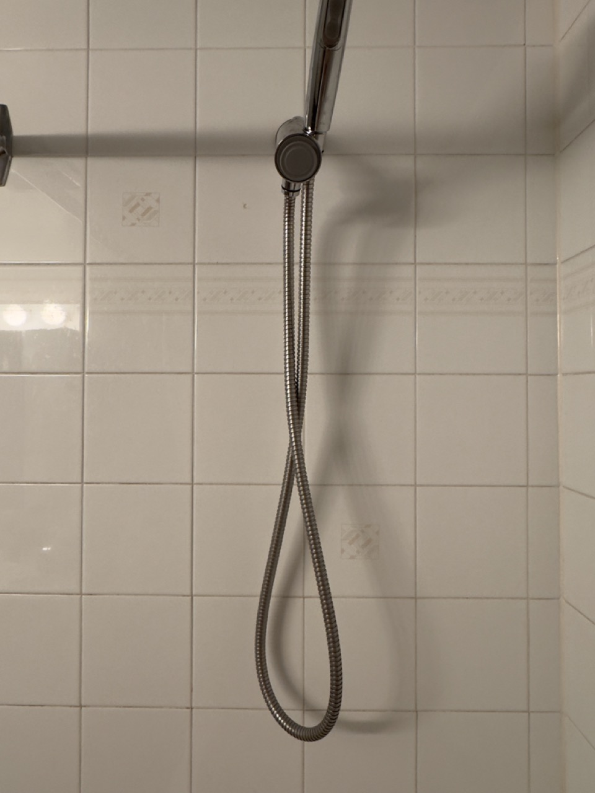
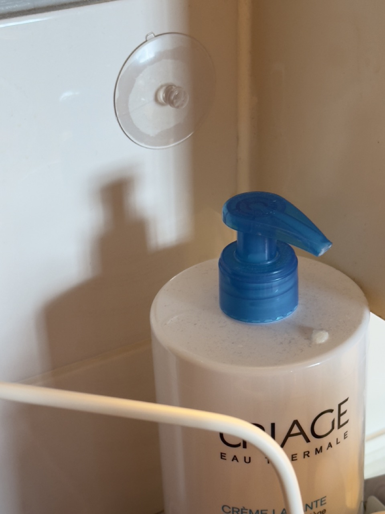
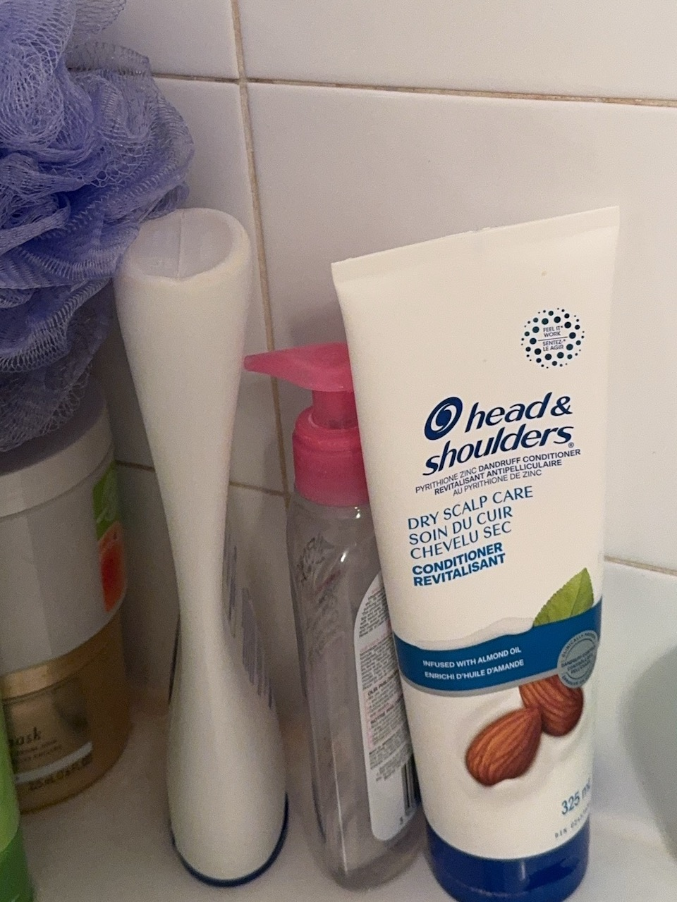

Taking a bath



I don't like taking showers since small.
Everything started with my mother took the three-year-old me on a log flume ride without any good reasons AT ALL! 🤡 (And I am not sure, and I am CURIOUS why the staff and rules of the park allowed her to do so)Not sure if it is because of the way my mother kept describing this for fun when growing up, or just my body owned the memories of sensual responses due to the subconsciousness. Whenever I think about this event, the moment of rushing down, it feels so vivid that the streams of water splashed on my face, with the smell of stagnant water mixed with algae. My mum said that after the ride, I refused to wash my face and even had trouble bathing with running water; therefore, the only thing she could do was to dampen the facial towel in the enamel basin, then wipe my face for at least half of the year. 🫠 🙄
Showering ain't enjoyable, until parts of my body get wet (even the tips of the hair ends); once I have no choice but to take the shower, I somehow let myself enjoy and focus on what's happening at that moment: the texture of transparent gel shampoo squeezed on my hand, the changes of the water streaming down when twisting the faucet, the scratch of the bath puff when all the bubbles are gone...
Unlike the impression that people are often the most vulnerable when taking baths (is this because of the stereotypes caused by classical scenes in films like Psycho and The Shining?), I, on the other hand, often feel refreshed during them, since these are periods of time that are occupied and free and safe to daydream by myself. These are MY time of the day, and if at home, my normal bath time is always close to an hour; though it's a labour for the body, but for sure a leisure for the brain.